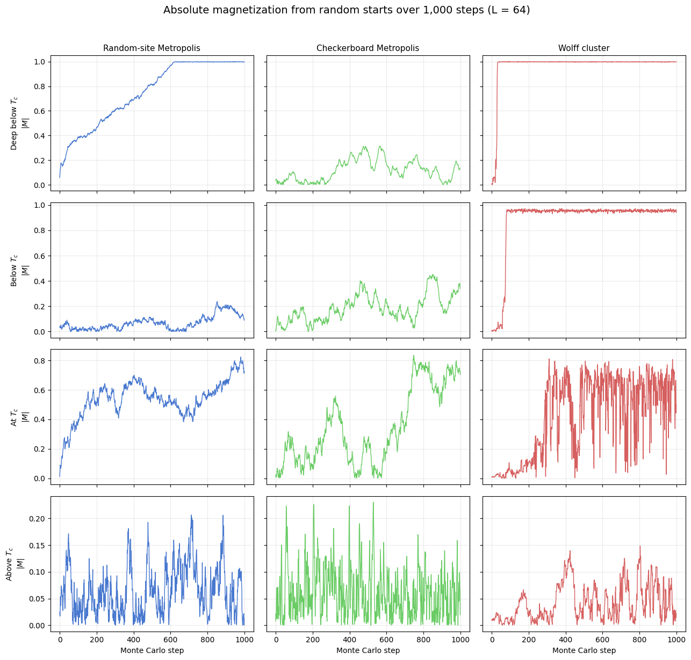
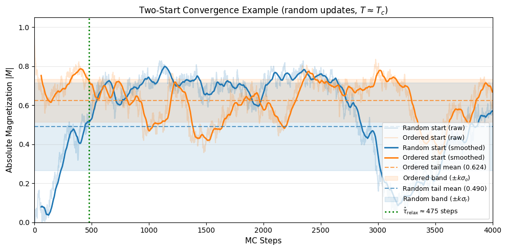
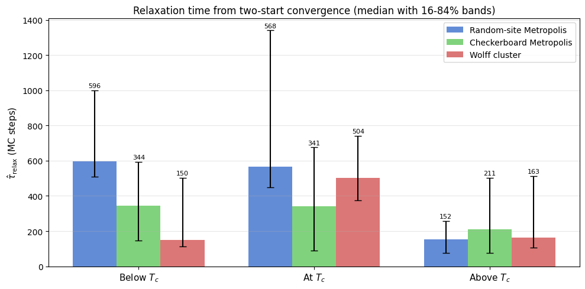
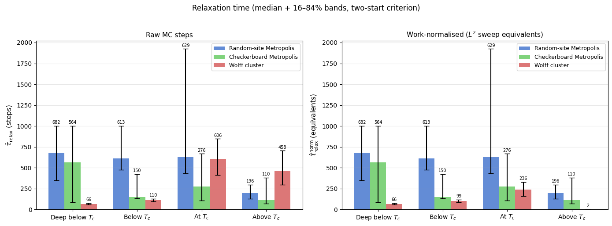
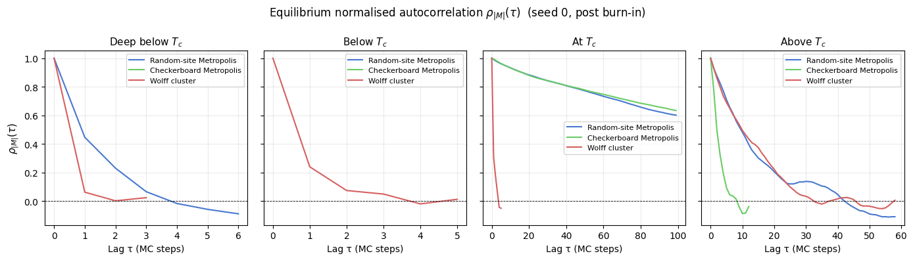
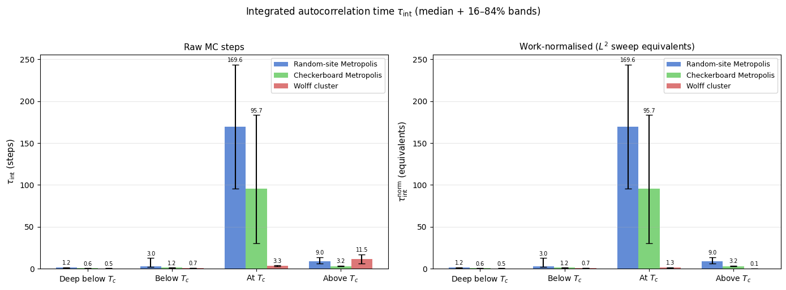

Ising Model: Relaxation to Equilibrium
When a Monte Carlo simulation starts from an arbitrary (e.g. random) configuration, the system is far from its thermal equilibrium state. During the initial relaxation (or thermalization) transient, observables drift systematically as the Markov chain moves toward the stationary distribution. Only after the chain has forgotten its starting point, once the relaxation time \(\tau_\text{relax}\) has elapsed, do the samples represent genuine thermal fluctuations that can be used for measurement.
This notebook quantifies relaxation to equilibrium for the 2D Ising model by comparing three update schemes. One step of random-site Metropolis [2] is one sweep: \(L^2\) single-spin flip attempts at randomly chosen sites. One step of checkerboard Metropolis is also one sweep, but the sites are visited sublattice by sublattice in a fixed pattern, which removes the cost of drawing random sites and allows vectorised updates. One step of the Wolff cluster update [3] is a single cluster flip, which near \(T_c\) cuts the equilibrium autocorrelation time by about two orders of magnitude at the lattice size used here.
All three algorithms start from the same deliberately unfavorable initial condition: a fully random spin configuration with no warm-up. The analysis covers four temperature slices: deep in the ordered phase (\(0.5\,T_c \approx 1.13\)), just below \(T_c\), at the Onsager critical point \(T_c = 2/\ln(1 + \sqrt{2}) \approx 2.269\) [1], and above \(T_c\). The critical point is where critical slowing down makes relaxation slowest and the contrast between algorithms most pronounced.
The notebook has four parts. It opens with the \(|M|\) trajectories themselves, which make the transient and its temperature dependence immediately visible. A threshold-crossing estimator on two-start convergence then extracts \(\hat{\tau}_\text{relax}\), the time the chain needs to forget its initial condition. The integrated autocorrelation time \(\tau_\text{int}\) follows, measuring equilibrium memory and setting the effective sample size once the chain is stationary. The closing interpretation connects both metrics to critical slowing down, to work normalisation between algorithms, and to the distinction between thermalization and statistical independence.
[1]:
from __future__ import annotations
import os
import matplotlib.pyplot as plt
import numpy as np
from models.ising_model import IsingSimulation
from utils.equilibration import estimate_relaxation_time_two_start
from utils.exceptions import ZeroVarianceAutocorrelationError
from utils.statistics import calculate_autocorr
TC_ISING = 2.0 / np.log(1.0 + np.sqrt(2.0))
L = 64
N_STEPS = 1000
TEMPS = [0.5 * TC_ISING, 0.8 * TC_ISING, TC_ISING, 1.2 * TC_ISING]
TEMP_LABELS = ['Deep below $T_c$', 'Below $T_c$', 'At $T_c$', 'Above $T_c$']
UPDATES = ['random', 'checkerboard', 'wolff']
UPDATE_LABELS = {
'random': 'Random-site Metropolis',
'checkerboard': 'Checkerboard Metropolis',
'wolff': 'Wolff cluster',
}
PALETTE = {'random': '#4878CF', 'checkerboard': '#6ACC65', 'wolff': '#D65F5F'}
# Robust relaxation analysis settings (used at/near criticality)
SEEDS = np.array([11, 22, 33, 44, 55, 66, 77, 88, 99, 111], dtype=int)
INIT_STATES = ['random', 'ordered']
MAX_STEPS_FACTOR = 4
CACHE_PATH = '../results/ising/ising_autocorrelation_multiseed_analysis.npz'
print(f'Exact Onsager T_c = {TC_ISING:.6f}')
print(f'Notebook cache path: {CACHE_PATH}')
print(f'L = {L}, base N_STEPS = {N_STEPS}, seeds = {len(SEEDS)}')
Exact Onsager T_c = 2.269185
Notebook cache path: ../results/ising/ising_autocorrelation_multiseed_analysis.npz
L = 64, base N_STEPS = 1000, seeds = 10
Load or compute trajectories
If a cached trajectory file exists at ../results/ising/ising_autocorrelation_multiseed_analysis.npz, the notebook reuses it directly. Otherwise it runs the four temperature slices inline (10 seeds, a random and an ordered start per seed, \(L = 64\)) and saves the resulting \(|M|\) time series and Wolff cluster sizes for later reads. The outputs stored with this notebook come from such an inline run. This keeps the notebook self-contained even though there is no separate batch script
for this specific figure yet.
[2]:
max_steps = N_STEPS * MAX_STEPS_FACTOR
n_temp = len(TEMPS)
n_upd = len(UPDATES)
n_seed = len(SEEDS)
n_init = len(INIT_STATES)
wolff_idx = UPDATES.index('wolff')
needs_recompute = True
if os.path.exists(CACHE_PATH):
data = np.load(CACHE_PATH, allow_pickle=False)
required = {
'temperatures',
'updates',
'seeds',
'init_states',
'magnetization_traces_full',
'steps_used',
'wolff_cluster_sizes', # new field — forces rebuild of old caches
}
if required.issubset(set(data.files)):
magnetization_traces_full = data['magnetization_traces_full']
steps_used = data['steps_used']
wolff_cluster_sizes = data['wolff_cluster_sizes']
if int(magnetization_traces_full.shape[0]) == n_temp:
needs_recompute = False
print(
f'Loaded cached trajectories from {CACHE_PATH}: '
f'shape={magnetization_traces_full.shape}.'
)
if needs_recompute:
print('Compatible cache not found. Running multi-seed simulations and saving the result...')
magnetization_traces_full = np.full((n_temp, n_upd, n_seed, n_init, max_steps), np.nan, dtype=float)
steps_used = np.zeros((n_temp, n_upd, n_seed, n_init), dtype=int)
# Wolff cluster sizes are only meaningful for the Wolff update; shape mirrors the full array.
wolff_cluster_sizes = np.zeros((n_temp, n_seed, n_init, max_steps), dtype=int)
for i, temperature in enumerate(TEMPS):
for j, update in enumerate(UPDATES):
for s_idx, seed in enumerate(SEEDS):
for init_idx, init_state in enumerate(INIT_STATES):
is_critical_local = TEMP_LABELS[i] == 'At $T_c$' and update in {'random', 'checkerboard'}
n_run = max_steps if is_critical_local else N_STEPS
sim = IsingSimulation(size=L, temp=temperature, update=update, seed=int(seed))
if init_state == 'ordered':
sim.spins = np.ones((L, L), dtype=np.int8)
if update == 'wolff':
mags, _, csizes = sim.run_with_cluster_sizes(n_steps=n_run)
wolff_cluster_sizes[i, s_idx, init_idx, :n_run] = csizes
else:
mags, _ = sim.run(n_steps=n_run)
magnetization_traces_full[i, j, s_idx, init_idx, :n_run] = np.asarray(mags, dtype=float)
steps_used[i, j, s_idx, init_idx] = n_run
print(
f' T={temperature:.3f}: all updates, {n_seed * n_init} trajectories each complete',
flush=True,
)
os.makedirs(os.path.dirname(CACHE_PATH), exist_ok=True)
np.savez(
CACHE_PATH,
temperatures=np.asarray(TEMPS, dtype=float),
temp_labels=np.asarray(TEMP_LABELS),
updates=np.asarray(UPDATES),
seeds=SEEDS,
init_states=np.asarray(INIT_STATES),
magnetization_traces_full=magnetization_traces_full,
steps_used=steps_used,
max_steps=np.asarray(max_steps, dtype=int),
wolff_cluster_sizes=wolff_cluster_sizes,
)
print(f'Saved cached trajectories to {CACHE_PATH}.')
# One representative random-start trace per (temp, update) for the visual panel.
magnetization_traces = magnetization_traces_full[:, :, 0, 0, :N_STEPS]
Compatible cache not found. Running multi-seed simulations and saving the result...
T=1.135: all updates, 20 trajectories each complete
T=1.815: all updates, 20 trajectories each complete
T=2.269: all updates, 20 trajectories each complete
T=2.723: all updates, 20 trajectories each complete
Saved cached trajectories to ../results/ising/ising_autocorrelation_multiseed_analysis.npz.
Magnetization traces
Each panel shows the absolute magnetization \(|M|\) of seed 0 over the first 1,000 steps after a random start, where a step is one sweep for the two Metropolis variants and one cluster flip for Wolff. The comparison is qualitative: below \(T_c\) the system should lock into an ordered state, near \(T_c\) the trajectories should remain noisy for much longer, and above \(T_c\) they should fluctuate around a small mean.
In the stored run, checkerboard Metropolis and Wolff reach saturation within about 30 to 170 steps at both temperatures below \(T_c\). Random-site Metropolis orders far more slowly from the same start: deep below \(T_c\) its trace climbs almost linearly and reaches \(|M| \approx 1\) only after about 800 sweeps, and at \(0.8\,T_c\) it is still near 0.8 after 1,000 sweeps. The checkerboard transient is a property of the update order, not of physical coarsening kinetics, for which only random-site selection is valid. At \(T_c\) all three traces wander over a wide range of \(|M|\), and above \(T_c\) they stay below about 0.25.
[3]:
fig, axes = plt.subplots(4, 3, figsize=(13, 12), sharex=True, sharey='row')
fig.suptitle(
f'Absolute magnetization from random starts over {N_STEPS:,} steps (L = {L})',
fontsize=14,
y=1.02,
)
for i, temp_label in enumerate(TEMP_LABELS):
for j, update in enumerate(UPDATES):
ax = axes[i, j]
ax.plot(
np.abs(magnetization_traces[i, j]),
lw=1.0,
color=PALETTE[update],
)
if i == 0:
ax.set_title(UPDATE_LABELS[update], fontsize=11)
if j == 0:
ax.set_ylabel(f'{temp_label}\n$|M|$')
if i == len(TEMPS) - 1:
ax.set_xlabel('Monte Carlo step')
ax.grid(alpha=0.25)
fig.tight_layout()
plt.show()

Quantitative relaxation-time analysis (multi-seed, two-start)
Near \(T_c\), one-trajectory criteria are noisy and can misclassify equilibration. We therefore estimate relaxation with a two-start convergence test for every seed:
Run the same (temperature, update, seed) from two initial states: a random state and a fully ordered state.
Smooth both \(|M|\) traces with a moving average.
Estimate tail statistics from the second half of each smoothed trace separately: mean and standard deviation for each trajectory.
Define \(\hat{\tau}_\text{relax}\) as the first time where the random-start trace lies within \(\pm k\) standard deviations of the ordered-start tail mean and the ordered-start trace simultaneously lies within \(\pm k\) standard deviations of the random-start tail mean, sustained over a dwell window. A sigma floor prevents band collapse for near-flat traces.
This mutual cross-band test is the operational definition of thermalization: neither trace can be declared equilibrated until it has entered the statistical range of the other.
Two properties of the estimator matter when reading the numbers. The returned time is the raw-trace position of the first smoothed point from which the dwell condition holds, and a smoothed point exists only once a full window of raw steps is available, so the smallest possible value is 59 steps for the 60-step window used here; estimates close to that value say only that relaxation took at most about 60 steps. When the two traces never meet within the run, the estimator returns the run length (1,000 steps, or 4,000 for the local updates at \(T_c\)). Such a value is censored: it is a lower bound on the relaxation time, not a measurement, and the tables below mark it with “≥” and count the censored seeds.
Visual Example of Convergence
The figure below applies the two-start test to seed 0 at \(T_c\) with random-site updates over the full 4,000-sweep run. This is the slowest combination in the study, because critical slowing down acts on top of the slow local dynamics.
[4]:
from utils.equilibration import (
_moving_average,
_valid_prefix,
)
# Extract indices for an illustrative slice: T_c, random, first seed
idx_t = TEMP_LABELS.index('At $T_c$')
idx_u = UPDATES.index('random')
idx_s = 0
# Match the analysis parameters used below
TOLERANCE_K_DEMO = 1.0
SMOOTH_WINDOW_DEMO = 60
DWELL_WINDOW_DEMO = 60
MIN_FRACTION_DEMO = 0.85
SIGMA_FLOOR_DEMO = 0.02
# Extract raw traces and remove potential NaNs padding
raw_r = _valid_prefix(np.abs(magnetization_traces_full[idx_t, idx_u, idx_s, 0]))
raw_o = _valid_prefix(np.abs(magnetization_traces_full[idx_t, idx_u, idx_s, 1]))
n_points = min(len(raw_r), len(raw_o))
raw_r = raw_r[:n_points]
raw_o = raw_o[:n_points]
# Calculate exact integer relaxation time
tau_demo = estimate_relaxation_time_two_start(
trace_random=raw_r, trace_ordered=raw_o,
k=TOLERANCE_K_DEMO,
smooth_window=SMOOTH_WINDOW_DEMO,
dwell_window=DWELL_WINDOW_DEMO,
min_fraction_inside=MIN_FRACTION_DEMO,
sigma_floor=SIGMA_FLOOR_DEMO)
# Recreate inner smoothing logic for plotting to match algorithm precisely
sm_r = _moving_average(raw_r, SMOOTH_WINDOW_DEMO)
sm_o = _moving_average(raw_o, SMOOTH_WINDOW_DEMO)
m_points = min(len(sm_r), len(sm_o))
sm_r = sm_r[:m_points]
sm_o = sm_o[:m_points]
# Mutual cross-band criterion: separate tail statistics for each trace
half = m_points // 2
tail_r = sm_r[half:]
tail_o = sm_o[half:]
mu_r = tail_r.mean()
mu_o = tail_o.mean()
sig_r = max(float(tail_r.std()), SIGMA_FLOOR_DEMO)
sig_o = max(float(tail_o.std()), SIGMA_FLOOR_DEMO)
band_r = TOLERANCE_K_DEMO * sig_r # ordered must enter random's band
band_o = TOLERANCE_K_DEMO * sig_o # random must enter ordered's band
# Plot
fig, ax = plt.subplots(figsize=(10, 5))
# We align the smoothed traces with the right edge of their rolling window
steps = np.arange(n_points)
steps_sm = np.arange(m_points) + (SMOOTH_WINDOW_DEMO - 1)
# Raw trajectories (faint)
ax.plot(steps, raw_r, color='#1f77b4', alpha=0.2, label='Random start (raw)')
ax.plot(steps, raw_o, color='#ff7f0e', alpha=0.2, label='Ordered start (raw)')
# Smoothed trajectories (bold)
ax.plot(steps_sm, sm_r, color='#1f77b4', linewidth=2, label='Random start (smoothed)')
ax.plot(steps_sm, sm_o, color='#ff7f0e', linewidth=2, label='Ordered start (smoothed)')
# Ordered-start band (random must enter): centred on ordered tail mean
ax.axhline(mu_o, color='#ff7f0e', linestyle='--', alpha=0.7, label=f'Ordered tail mean ({mu_o:.3f})')
ax.axhspan(mu_o - band_o, mu_o + band_o, color='#ff7f0e', alpha=0.12, label=r'Ordered band ($\pm k\sigma_o$)')
# Random-start band (ordered must enter): centred on random tail mean
ax.axhline(mu_r, color='#1f77b4', linestyle='--', alpha=0.7, label=f'Random tail mean ({mu_r:.3f})')
ax.axhspan(mu_r - band_r, mu_r + band_r, color='#1f77b4', alpha=0.12, label=r'Random band ($\pm k\sigma_r$)')
# Relaxation point indicator
if tau_demo < n_points:
x_tau = tau_demo
ax.axvline(x_tau, color='green', linewidth=2, linestyle=':', label=rf'$\hat{{\tau}}_\mathrm{{relax}} \approx {x_tau}$ steps')
ax.set_xlim(0, n_points)
ax.set_ylim(0, 1.05)
ax.set_xlabel('MC Steps', fontsize=11)
ax.set_ylabel(r'Absolute Magnetization $|M|$', fontsize=11)
ax.set_title(r"Two-Start Convergence Example (random updates, $T \approx T_c$)", fontsize=12)
ax.legend(loc='lower right', fontsize=9)
ax.grid(axis='y', alpha=0.3)
fig.tight_layout()
plt.show()

The plot shows how the random (hot) start and the ordered (cold) start converge onto the same thermal average. The orange band marks the region that the random-start trace must enter (centred on the ordered-start tail mean); the blue band marks the region the ordered-start trace must enter (centred on the random-start tail mean). The green dotted line marks \(\hat{\tau}_\text{relax}\), the first step at which both conditions are jointly satisfied and sustained, here about 475 sweeps. By this criterion the memory of the initial state has decayed at that point.
The example also shows how coarse the criterion is at \(T_c\). The two tail means differ (0.624 and 0.490) because the random-start trace drops to about 0.2 near sweep 3,000, a single slow excursion that one 4,000-sweep trajectory cannot average out. The bands are correspondingly wide, so the test detects the end of the gross transient rather than a precise equilibration time.
[5]:
TOLERANCE_K = 1.0
SMOOTH_WINDOW = 60
DWELL_WINDOW = 60
MIN_FRACTION_INSIDE = 0.85
SIGMA_FLOOR = 0.02
tau_samples = np.empty((len(TEMPS), len(UPDATES), len(SEEDS)), dtype=float)
for i in range(len(TEMPS)):
for j in range(len(UPDATES)):
for s_idx in range(len(SEEDS)):
trace_r = magnetization_traces_full[i, j, s_idx, 0]
trace_o = magnetization_traces_full[i, j, s_idx, 1]
tau_samples[i, j, s_idx] = estimate_relaxation_time_two_start(
trace_random=trace_r,
trace_ordered=trace_o,
k=TOLERANCE_K,
smooth_window=SMOOTH_WINDOW,
dwell_window=DWELL_WINDOW,
min_fraction_inside=MIN_FRACTION_INSIDE,
sigma_floor=SIGMA_FLOOR)
# Median and 16-84% band across seeds
median_tau = np.median(tau_samples, axis=2)
p16_tau = np.percentile(tau_samples, 16, axis=2)
p84_tau = np.percentile(tau_samples, 84, axis=2)
# The estimator returns the run length when the two traces never meet, so a
# value at the run length is censored: a lower bound, not a measurement.
run_length = steps_used[:, :, :, 0]
censored = tau_samples >= run_length
n_censored = censored.sum(axis=2)
def _fmt_tau(value: float, cap: float) -> str:
"""Format a relaxation time, prefixing values at the run length with '≥'."""
return f"{'≥' if value >= cap else ' '}{value:.0f}"
# --- Table printout ---
col_w = 34
header = f"{'Temperature':<18}" + "".join(f"{UPDATE_LABELS[u]:>{col_w}}" for u in UPDATES)
print(header)
print('-' * len(header))
for i, label in enumerate(TEMP_LABELS):
entries = []
for j in range(len(UPDATES)):
cap = float(run_length[i, j, 0])
med = _fmt_tau(median_tau[i, j], cap)
lo = _fmt_tau(p16_tau[i, j], cap)
hi = _fmt_tau(p84_tau[i, j], cap)
entries.append(f"{med:>6} [{lo:>5}, {hi:>5}]")
row = f"{label:<18}" + ''.join(f"{e:>{col_w}}" for e in entries)
print(row)
print('\nSeeds with no crossing within the run (value = run length, a lower bound):')
for i, label in enumerate(TEMP_LABELS):
counts = ''.join(f"{f'{n_censored[i, j]}/{len(SEEDS)}':>{col_w}}" for j in range(len(UPDATES)))
print(f"{label:<18}" + counts)
print(
f"\n(seeds = {len(SEEDS)}, k = {TOLERANCE_K}, smooth = {SMOOTH_WINDOW}, "
f"dwell = {DWELL_WINDOW}, min_fraction_inside = {MIN_FRACTION_INSIDE:.2f}, "
f"sigma_floor = {SIGMA_FLOOR:.2f}, L = {L})"
)
print('Each entry is median [16th, 84th percentile] over seeds; "≥" marks a value at the run length.')
print(f'The smallest value the estimator can return is SMOOTH_WINDOW - 1 = {SMOOTH_WINDOW - 1} steps.')
print(
f"Note: at T_c, local updates run for {max_steps} steps "
f"(N_STEPS \u00d7 MAX_STEPS_FACTOR = {N_STEPS} \u00d7 {MAX_STEPS_FACTOR}); "
"Wolff and off-critical runs use N_STEPS."
)
# --- Bar chart with error bars ---
x = np.arange(len(TEMPS))
width = 0.25
fig, ax = plt.subplots(figsize=(10, 5))
for j, update in enumerate(UPDATES):
y = median_tau[:, j]
yerr = np.vstack([y - p16_tau[:, j], p84_tau[:, j] - y])
bars = ax.bar(
x + (j - 1) * width,
y,
width=width,
yerr=yerr,
capsize=4,
label=UPDATE_LABELS[update],
color=PALETTE[update],
alpha=0.85,
)
ax.bar_label(bars, fmt='%.0f', fontsize=8, padding=2)
ax.set_xticks(x)
ax.set_xticklabels(TEMP_LABELS, fontsize=11)
ax.set_ylabel(r'$\hat{\tau}_\mathrm{relax}$ (MC steps)', fontsize=11)
ax.set_title('Relaxation time from two-start convergence (median with 16-84% bands)', fontsize=12)
ax.legend(fontsize=10)
ax.grid(axis='y', alpha=0.3)
fig.tight_layout()
plt.show()
Temperature Random-site Metropolis Checkerboard Metropolis Wolff cluster
------------------------------------------------------------------------------------------------------------------------
Deep below $T_c$ 744 [ 620, ≥1000] 90 [ 83, 333] 74 [ 67, 81]
Below $T_c$ ≥1000 [ 676, ≥1000] 180 [ 158, 212] 121 [ 112, 141]
At $T_c$ 1259 [ 539, ≥4000] 401 [ 188, 1147] 529 [ 439, 765]
Above $T_c$ 313 [ 178, 570] 92 [ 59, 123] 334 [ 243, 539]
Seeds with no crossing within the run (value = run length, a lower bound):
Deep below $T_c$ 4/10 1/10 0/10
Below $T_c$ 6/10 1/10 0/10
At $T_c$ 3/10 0/10 0/10
Above $T_c$ 1/10 0/10 1/10
(seeds = 10, k = 1.0, smooth = 60, dwell = 60, min_fraction_inside = 0.85, sigma_floor = 0.02, L = 64)
Each entry is median [16th, 84th percentile] over seeds; "≥" marks a value at the run length.
The smallest value the estimator can return is SMOOTH_WINDOW - 1 = 59 steps.
Note: at T_c, local updates run for 4000 steps (N_STEPS × MAX_STEPS_FACTOR = 1000 × 4); Wolff and off-critical runs use N_STEPS.

Trapping in the Ordered Phase: Quasi-Steady Stuck Detection
In the deep ordered phase (\(T < T_c\)), the simple mutual cross-band criterion used above can sometimes fail to signal convergence within a reasonable time. This occurs because a random initial state often nucleates multiple domains of opposite spin that become topologically trapped. These “stuck” states form a long-lived metastable plateau with \(\lvert M \rvert < 1\) and very low variance, making them appear “quasi-steady” even though they have not reached the global minimum.
To handle this physical reality efficiently, VibeSpin’s production equilibration routine (convergence_equilibrate_with_status) implements Quasi-Steady Stuck Detection. If the system detects that the ordered-start trace has settled into a stable ground state (\(\lvert M \rvert \approx 1\) with low variance) while the random-start trace remains stranded in a lower-magnetization plateau, it declares the equilibration complete. In these cases, the engine automatically falls back to using
the stable ordered-start simulation for all subsequent thermodynamic measurements. This ensures that the simulation provides physically correct equilibrium results without wasting thousands of MC steps waiting for a random start to overcome a massive free-energy barrier.
Why the ordered-start fallback is set for Ising and not for the vector models
The fallback described above is not switched on everywhere. scripts/ising/temperature_sweep.py passes ordered_start_below=T_c to the shared sweep runner, and scripts/clock/temperature_sweep.py does the same for the discrete clock model (its default) below the lowest transition, while the XY sweep and the continuous clock sweep leave it unset, so a random start there is never replaced by the ordered one. That asymmetry looks arbitrary until the trapping mechanism is stated precisely.
A stranded state is a domain wall that wraps the periodic lattice. For Ising the wall separates \(+1\) from \(-1\) and cannot be removed continuously: every intermediate configuration costs energy, so escaping requires nucleating a kink, an activated process whose rate falls off as \(\exp(-4J/T)\). Deep in the ordered phase that is effectively never, which is what makes the state metastable rather than merely slow.
The XY model has no such barrier for a local wall. Its order parameter is a continuous angle, so a wall can unwind by rotating spins through intermediate directions, and a random start usually finds the same plateau as the ordered one, given enough steps. The exception is a twisted state, in which the angle winds by a multiple of \(2\pi\) around a periodic direction of the torus. That winding is a topological property: smooth rotations cannot remove it, and removing it requires a vortex-antivortex pair to form and travel across the lattice, an activated process. A random start that freezes into such a state can therefore stay stranded for a long time at low temperature, so the XY model is not free of trapping in principle, only free of the domain-wall trapping described above.
The clock model sits on both sides of that line, and which side depends on the representation. ClockSimulation with \(A = 0\) is the XY Hamiltonian exactly, since \(q\) enters only through the anisotropy term, so it behaves like XY; DiscreteClockSimulation restricts the spins to \(q\) discrete directions and therefore traps like Ising. The measurement below includes it precisely because it separates the symmetry of the order parameter from the name of the model.
[6]:
from models.clock_model import DiscreteClockSimulation
from models.xy_model import XYSimulation
# Deliberately small: this is an illustration of a mechanism, not a
# measurement of a rate. The stranded fraction below is a property of these
# specific eight seeds at this size and budget, not a universal number.
_TRAP_L, _TRAP_STEPS, _TRAP_SEEDS, _TRAP_T = 32, 4000, 8, 0.10
_TRAP_TAIL = 300
TRAP_MODELS = {
'Ising': (IsingSimulation, {}),
'XY': (XYSimulation, {}),
'Discrete clock $q=6$': (DiscreteClockSimulation, {'q': 6}),
}
trap = {}
for name, (cls, kwargs) in TRAP_MODELS.items():
common = dict(size=_TRAP_L, temp=_TRAP_T, update='checkerboard', **kwargs)
ordered = cls(init_state='ordered', seed=1, **common)
trace_ordered, _ = ordered.run(n_steps=_TRAP_STEPS)
plateau = float(np.mean(trace_ordered[-_TRAP_TAIL:]))
traces_random = []
for seed in range(_TRAP_SEEDS):
run = cls(init_state='random', seed=seed, **common)
trace, _ = run.run(n_steps=_TRAP_STEPS)
traces_random.append(trace)
finals = np.array([float(np.mean(t[-_TRAP_TAIL:])) for t in traces_random])
trap[name] = {
'ordered': trace_ordered,
'random': traces_random,
'plateau': plateau,
'finals': finals,
'stranded': int((finals < 0.9 * plateau).sum()),
}
print(f'T = {_TRAP_T}, L = {_TRAP_L}, {_TRAP_STEPS} checkerboard steps, '
f'{_TRAP_SEEDS} random-start seeds\n')
print(f'{"Model":24s}{"ordered plateau":>17s}{"random median":>15s}{"random min":>12s}{"stranded":>10s}')
print('-' * 78)
for name, res in trap.items():
print(f'{name:24s}{res["plateau"]:17.3f}{np.median(res["finals"]):15.3f}'
f'{res["finals"].min():12.3f}{res["stranded"]:>7d}/{_TRAP_SEEDS}')
fig, axes = plt.subplots(1, 3, figsize=(13, 4), sharey=True)
steps = np.arange(1, _TRAP_STEPS + 1)
for ax, (name, res) in zip(axes, trap.items(), strict=True):
for trace in res['random']:
ax.plot(steps, trace, color='0.55', lw=0.8, alpha=0.8)
ax.plot(steps, res['ordered'], color='#D65F5F', lw=1.8, label='ordered start')
ax.axhline(res['plateau'], color='0.3', ls='--', lw=1, label='ordered plateau')
ax.plot([], [], color='0.55', lw=0.8, label='random starts')
ax.set_xscale('log')
ax.set_xlabel('MC step')
ax.set_title(f'{name}\n{res["stranded"]}/{_TRAP_SEEDS} random starts stranded')
ax.legend(fontsize=8, loc='lower right')
axes[0].set_ylabel(r'$|M|$')
axes[0].set_ylim(0, 1.05)
fig.suptitle(
f'Metastable trapping needs a discrete order parameter '
f'($T = {_TRAP_T}$, $L = {_TRAP_L}$)',
fontsize=13,
)
fig.tight_layout()
plt.show()
T = 0.1, L = 32, 4000 checkerboard steps, 8 random-start seeds
Model ordered plateau random median random min stranded
------------------------------------------------------------------------------
Ising 1.000 0.635 0.074 4/8
XY 0.965 0.970 0.967 0/8
Discrete clock $q=6$ 1.000 0.875 0.594 5/8

The three panels separate cleanly. For Ising and the discrete clock model the random starts split into two groups: some reach the ordered plateau and the rest settle onto a lower one and stay there for the whole budget. For XY every random start ends on the same plateau as the ordered start, and the only difference between the two curves is how long the approach takes.
The split is the signature the production stuck detector looks for. It fires when the ordered-start trace is cleanly ordered with low variance while the random-start trace is stranded on a plateau below it, and the sweep then measures on the ordered start. Where no split exists, as in the XY panel, the rule has nothing to correct. Leaving ordered_start_below unset for XY follows from its symmetry, and the higher --eq-max-steps default of the XY sweep (200 000 against Ising’s 20 000)
addresses what is slow there, which is the approach rather than a barrier. None of the eight XY seeds here ends in a twisted state, so this run does not probe that exception.
Two things about the numbers. The stranded fractions come from eight seeds at \(L = 32\), so they say which mechanism is present, not how often it occurs. And the effect is strongly temperature-dependent: a separate run with the same seeds, size and budget at \(T = 0.35\,T_c\) instead of \(T = 0.10\) (not shown) leaves no Ising seed stranded, because the escape rate \(\exp(-4J/T)\) has risen by orders of magnitude. That is why the fallback is tied to a temperature threshold rather than switched on unconditionally.
The clock sweep now runs the discrete model by default, and that model traps exactly as the right panel shows. The sweep therefore passes ordered_start_below for \(q = 2\), 3, 4 and 6, using the exact transition temperatures for \(q \le 4\) and the approximate lower transition \(T_1 \approx 0.68\) for \(q = 6\). Other values of \(q\) have no threshold and run without the fallback, and the continuous model selected with --continuous leaves it unset, as XY does.
Work-normalised relaxation time
The raw step counts above are not directly comparable because one Monte Carlo step means very different things for each algorithm:
Algorithm |
Work per step |
|---|---|
Local Metropolis (random or checkerboard) |
\(L^2\) single-spin flip attempts |
Wolff cluster |
1 cluster flip of \(\langle C \rangle\) spins, accepted with probability 1 |
A common convention is to express time in units of “one \(L^2\) flip-attempt sweep”. Under this convention:
\(\langle C \rangle\) is taken directly from the per-step cluster sizes recorded by run_with_cluster_sizes() and stored in the cache, averaged over the second half of each random-start Wolff run. That is the equilibrium cluster size. During the transient from a random start below \(T_c\) the clusters are confined to the growing domains and are smaller, so the normalised Wolff relaxation times below \(T_c\) overstate the work actually spent.
[7]:
# --------------------------------------------------------------------
# 1. Compute exact mean Wolff cluster size <C> per temperature.
# wolff_cluster_sizes shape: (n_temp, n_seed, n_init, max_steps)
# We use only the equilibrated second half of the random-start trajectories.
# --------------------------------------------------------------------
mean_C = np.empty(len(TEMPS))
for i in range(len(TEMPS)):
all_sizes = []
for s_idx in range(n_seed):
n_valid = steps_used[i, wolff_idx, s_idx, 0] # random-start run length
csizes = wolff_cluster_sizes[i, s_idx, 0, :n_valid]
half = n_valid // 2
all_sizes.append(csizes[half:]) # equilibrated half only
mean_C[i] = np.concatenate(all_sizes).mean()
print('Exact mean Wolff cluster size <C> per temperature (from recorded step data):')
for label, c in zip(TEMP_LABELS, mean_C, strict=True):
print(f' {label}: <C> = {c:.1f} spins (<C>/L² = {c / L**2:.4f})')
# --------------------------------------------------------------------
# 2. Work-normalisation factor per (temperature, update).
# Local: 1 step = L² flip-attempts → factor = 1.
# Wolff: 1 step = <C> flips → factor = <C> / L².
# --------------------------------------------------------------------
L2 = L * L
work_factor = np.ones((len(TEMPS), len(UPDATES)))
for i in range(len(TEMPS)):
work_factor[i, wolff_idx] = mean_C[i] / L2
# --------------------------------------------------------------------
# 3. Apply normalisation to per-seed tau samples.
# --------------------------------------------------------------------
tau_norm_samples = tau_samples * work_factor[:, :, np.newaxis]
median_tau_norm = np.median(tau_norm_samples, axis=2)
p16_tau_norm = np.percentile(tau_norm_samples, 16, axis=2)
p84_tau_norm = np.percentile(tau_norm_samples, 84, axis=2)
# --- Table ---
col_w = 34
header = f"{'Temperature':<18}" + ''.join(f'{UPDATE_LABELS[u]:>{col_w}}' for u in UPDATES)
print('\nWork-normalised relaxation time (in L² sweep equivalents):')
print(header)
print('-' * len(header))
for i, label in enumerate(TEMP_LABELS):
entries = []
for j in range(len(UPDATES)):
cap = float(run_length[i, j, 0]) * work_factor[i, j]
med = _fmt_tau(median_tau_norm[i, j], cap)
lo = _fmt_tau(p16_tau_norm[i, j], cap)
hi = _fmt_tau(p84_tau_norm[i, j], cap)
entries.append(f'{med:>6} [{lo:>5}, {hi:>5}]')
print(f'{label:<18}' + ''.join(f'{e:>{col_w}}' for e in entries))
print(f'\n(units: equivalent L²={L2} flip-attempt sweeps | L = {L} | seeds = {n_seed})')
# --- Side-by-side bar charts ---
x = np.arange(len(TEMPS))
width = 0.25
fig, axes = plt.subplots(1, 2, figsize=(14, 5))
for _ax_idx, (ax, ydata, yp16, yp84, title) in enumerate(zip(
axes,
[median_tau, median_tau_norm],
[p16_tau, p16_tau_norm],
[p84_tau, p84_tau_norm],
['Raw MC steps', r'Work-normalised ($L^2$ sweep equivalents)'], strict=True,
)):
bar_containers = []
for j, update in enumerate(UPDATES):
y = ydata[:, j]
yerr = np.vstack([y - yp16[:, j], yp84[:, j] - y])
bars = ax.bar(
x + (j - 1) * width, y, width=width, yerr=yerr, capsize=4,
label=UPDATE_LABELS[update], color=PALETTE[update], alpha=0.85,
)
ax.bar_label(bars, fmt='%.0f', fontsize=7, padding=2)
bar_containers.append(bars)
ax.set_xticks(x)
ax.set_xticklabels(TEMP_LABELS, fontsize=10)
ax.set_title(title, fontsize=11)
ax.legend(fontsize=9)
ax.grid(axis='y', alpha=0.3)
axes[0].set_ylabel(r'$\hat{\tau}_\mathrm{relax}$ (steps)', fontsize=11)
axes[1].set_ylabel(r'$\hat{\tau}_\mathrm{relax}^\mathrm{norm}$ (equivalents)', fontsize=11)
fig.suptitle('Relaxation time (median + 16–84% bands, two-start criterion)', fontsize=12, y=1.02)
fig.tight_layout()
plt.show()
Exact mean Wolff cluster size <C> per temperature (from recorded step data):
Deep below $T_c$: <C> = 4074.9 spins (<C>/L² = 0.9949)
Below $T_c$: <C> = 3718.2 spins (<C>/L² = 0.9078)
At $T_c$: <C> = 1574.2 spins (<C>/L² = 0.3843)
Above $T_c$: <C> = 19.7 spins (<C>/L² = 0.0048)
Work-normalised relaxation time (in L² sweep equivalents):
Temperature Random-site Metropolis Checkerboard Metropolis Wolff cluster
------------------------------------------------------------------------------------------------------------------------
Deep below $T_c$ 744 [ 620, ≥1000] 90 [ 83, 333] 73 [ 66, 81]
Below $T_c$ ≥1000 [ 676, ≥1000] 180 [ 158, 212] 110 [ 102, 128]
At $T_c$ 1259 [ 539, ≥4000] 401 [ 188, 1147] 203 [ 169, 294]
Above $T_c$ 313 [ 178, 570] 92 [ 59, 123] 2 [ 1, 3]
(units: equivalent L²=4096 flip-attempt sweeps | L = 64 | seeds = 10)

Integrated autocorrelation time
The two-start convergence test is a non-equilibrium diagnostic: it asks when the chain has forgotten its starting configuration. Once in equilibrium, the complementary question is “how statistically independent are consecutive samples?”, which the integrated autocorrelation time \(\tau_\text{int}\) answers.
Given post-burn-in samples of observable \(A_t\), define the normalised autocorrelation function:
The integrated autocorrelation time is then:
Its practical significance is direct: if you collect \(N\) post-burn-in steps and estimate the mean \(\bar{A}\), the statistical error is
In other words, \(N / (2\tau_\text{int})\) is the effective number of independent samples, so \(\tau_\text{int}\) directly controls the cost of any equilibrium measurement.
The upper limit \(W\) uses the Madras–Sokal automatic window [4] [5]: increase \(W\) one step at a time and stop as soon as \(W \geq c\,\tau_\text{int}(W)\), with \(c = 5\). This cuts off the noisy tail of \(\rho\) before it inflates the estimate.
The burn-in discarded here equals \(\hat{\tau}_\text{relax}\) from the two-start analysis, with each of the 10 seeds using its own per-seed estimate. The trajectories were designed for the thermalization study (1,000 to 4,000 steps), which limits this measurement in three ways. A seed whose \(\hat{\tau}_\text{relax}\) is censored has no post-burn-in data and returns NaN; the median then uses the remaining seeds, so it is biased toward the faster-relaxing ones, and the table below prints how many seeds are left. Where data remain for random-site Metropolis below \(T_c\), the post-burn-in window is only about 300 to 350 sweeps. Finally, the lag sum is capped at 400 steps (and at a quarter of the post-burn-in length), so for \(\tau_\text{int}\) above about 80 steps the condition \(W \geq 5\,\tau_\text{int}\) is never reached and the estimate is a truncated sum that underestimates \(\tau_\text{int}\).
A post-burn-in trace with zero variance has no defined autocorrelation time. Following the project’s zero-variance policy, the helper returns NaN for it rather than a number, and the printed note reports such seeds separately from the censored ones.
[8]:
# =====================================================================
# Integrated autocorrelation time τ_int
# Observable: |M|. Burn-in per seed taken from per-seed τ_relax above.
# =====================================================================
ACORR_C = 5 # Madras–Sokal window constant
ACORR_MAX_LAG = 400 # hard cap on lag search
def _notebook_autocorr(
trace: np.ndarray,
burn_in: int,
c: float = ACORR_C,
max_lag: int = ACORR_MAX_LAG,
) -> tuple[float, int, np.ndarray]:
"""
Thin wrapper around utils.statistics.calculate_autocorr.
Applies burn-in, strips non-finite values, and returns NaN instead of
raising for degenerate traces. Returns (tau_int, window_W, rho[0..W]).
"""
x = np.abs(np.asarray(trace, dtype=float))
finite_idx = np.where(np.isfinite(x))[0]
if finite_idx.size == 0:
return np.nan, 0, np.array([1.0])
x = x[finite_idx[0]: finite_idx[-1] + 1]
bi = max(0, int(burn_in))
if bi >= len(x) - 4:
return np.nan, 0, np.array([1.0])
x = x[bi:]
try:
C_t, tau_int = calculate_autocorr(
time_series=x,
max_lag=min(max_lag, len(x) // 4),
window_constant=float(c),
)
except ZeroVarianceAutocorrelationError:
# A frozen trace has no defined autocorrelation time; report NaN, as
# the docstring says and the project's zero-variance policy requires.
return np.nan, 0, np.array([1.0])
return float(tau_int), len(C_t) - 1, C_t
# --- Compute τ_int per (temperature, update, seed) ---
tau_int_samples = np.full((n_temp, n_upd, n_seed), np.nan)
acorr_rho_rep = {} # representative ρ curve per (i, j) for plotting (seed 0)
n_nan_short = 0 # burn-in leaves fewer than 5 post-burn-in steps
n_nan_flat = 0 # post-burn-in trace has zero variance
for i in range(n_temp):
for j in range(n_upd):
for s_idx in range(n_seed):
burn_in = int(tau_samples[i, j, s_idx])
trace = magnetization_traces_full[i, j, s_idx, 0]
ti, _w, _ = _notebook_autocorr(trace, burn_in)
tau_int_samples[i, j, s_idx] = ti
if not np.isfinite(ti):
if burn_in >= int(steps_used[i, j, s_idx, 0]) - 4:
n_nan_short += 1
else:
n_nan_flat += 1
# representative curve: seed 0
burn0 = int(tau_samples[i, j, 0])
_, _, rho0 = _notebook_autocorr(magnetization_traces_full[i, j, 0, 0], burn0)
acorr_rho_rep[(i, j)] = rho0
# --- Summary statistics ---
median_tau_int = np.nanmedian(tau_int_samples, axis=2)
p16_tau_int = np.nanpercentile(tau_int_samples, 16, axis=2)
p84_tau_int = np.nanpercentile(tau_int_samples, 84, axis=2)
tau_int_norm_samples = tau_int_samples * work_factor[:, :, np.newaxis]
median_tau_int_norm = np.nanmedian(tau_int_norm_samples, axis=2)
p16_tau_int_norm = np.nanpercentile(tau_int_norm_samples, 16, axis=2)
p84_tau_int_norm = np.nanpercentile(tau_int_norm_samples, 84, axis=2)
# --- Table ---
col_w = 34
header = f"{'Temperature':<18}" + ''.join(f'{UPDATE_LABELS[u]:>{col_w}}' for u in UPDATES)
print(f'Integrated autocorrelation time τ_int (raw steps, observable = |M|, c = {ACORR_C}):')
print(header)
print('-' * len(header))
for i, label in enumerate(TEMP_LABELS):
entries = []
for j in range(n_upd):
med = median_tau_int[i, j]
lo = p16_tau_int[i, j]
hi = p84_tau_int[i, j]
entries.append(f'{med:5.1f} [{lo:4.1f}, {hi:4.1f}]')
print(f'{label:<18}' + ''.join(f'{e:>{col_w}}' for e in entries))
print(f'\n(Madras–Sokal window c = {ACORR_C}, max-lag cap = {ACORR_MAX_LAG}, seeds = {n_seed})')
print('Burn-in per seed = per-seed τ_relax from the two-start test.')
print('Seeds with a finite τ_int per entry:')
n_finite = np.isfinite(tau_int_samples).sum(axis=2)
for i, label in enumerate(TEMP_LABELS):
print(f'{label:<18}' + ''.join(f"{f'{n_finite[i, j]}/{n_seed}':>{col_w}}" for j in range(n_upd)))
if n_nan_short:
print(f'Note: {n_nan_short} seed(s) returned NaN because the burn-in reaches the end of the run '
'(censored τ_relax); excluded from the median.')
if n_nan_flat:
print(f'Note: {n_nan_flat} seed(s) returned NaN because the post-burn-in trace has zero variance; '
'excluded from the median.')
# --- Plot 1: ρ(τ) for each temperature (one panel per T, all algorithms) ---
PLOT_LAGS = 100
fig, axes = plt.subplots(1, n_temp, figsize=(14, 4), sharey=True)
for i, (ax, label) in enumerate(zip(axes, TEMP_LABELS, strict=True)):
for j, update in enumerate(UPDATES):
rho = acorr_rho_rep[(i, j)]
lags = np.arange(min(len(rho), PLOT_LAGS))
ax.plot(lags, rho[:PLOT_LAGS], color=PALETTE[update],
label=UPDATE_LABELS[update], lw=1.5)
ax.axhline(0, color='k', lw=0.6, ls='--')
ax.set_xlabel('Lag τ (MC steps)', fontsize=10)
ax.set_title(label, fontsize=11)
ax.legend(fontsize=8)
ax.grid(alpha=0.25)
axes[0].set_ylabel(r'$\rho_{|M|}(\tau)$', fontsize=11)
fig.suptitle(
r'Equilibrium normalised autocorrelation $\rho_{|M|}(\tau)$ (seed 0, post burn-in)',
fontsize=12,
)
fig.tight_layout()
plt.show()
# --- Plot 2: τ_int bar charts (raw + work-normalised) ---
x_pos = np.arange(n_temp)
width = 0.25
fig, axes = plt.subplots(1, 2, figsize=(14, 5))
for _ax_idx, (ax, ydata, yp16, yp84, title) in enumerate(zip(
axes,
[median_tau_int, median_tau_int_norm],
[p16_tau_int, p16_tau_int_norm],
[p84_tau_int, p84_tau_int_norm],
['Raw MC steps', r'Work-normalised ($L^2$ sweep equivalents)'], strict=True,
)):
for j, update in enumerate(UPDATES):
y = ydata[:, j]
yerr = np.vstack([np.clip(y - yp16[:, j], 0, None),
np.clip(yp84[:, j] - y, 0, None)])
bars = ax.bar(
x_pos + (j - 1) * width, y, width=width, yerr=yerr, capsize=4,
label=UPDATE_LABELS[update], color=PALETTE[update], alpha=0.85,
)
ax.bar_label(bars, fmt='%.1f', fontsize=7, padding=2)
ax.set_xticks(x_pos)
ax.set_xticklabels(TEMP_LABELS, fontsize=10)
ax.set_title(title, fontsize=11)
ax.legend(fontsize=9)
ax.grid(axis='y', alpha=0.3)
axes[0].set_ylabel(r'$\tau_\mathrm{int}$ (steps)', fontsize=11)
axes[1].set_ylabel(r'$\tau_\mathrm{int}^\mathrm{norm}$ (equivalents)', fontsize=11)
fig.suptitle(
r'Integrated autocorrelation time $\tau_\mathrm{int}$ (median + 16–84% bands)',
fontsize=12, y=1.02,
)
fig.tight_layout()
plt.show()
Integrated autocorrelation time τ_int (raw steps, observable = |M|, c = 5):
Temperature Random-site Metropolis Checkerboard Metropolis Wolff cluster
------------------------------------------------------------------------------------------------------------------------
Deep below $T_c$ 1.2 [ 1.0, 1.5] 0.6 [ 0.5, 0.6] 0.5 [ 0.5, 0.6]
Below $T_c$ 3.0 [ 2.4, 12.7] 1.2 [ 1.0, 1.3] 0.7 [ 0.6, 0.8]
At $T_c$ 169.6 [95.4, 243.3] 95.7 [30.7, 183.4] 3.3 [ 2.5, 4.0]
Above $T_c$ 9.0 [ 6.3, 13.8] 3.2 [ 2.8, 3.8] 11.5 [ 6.0, 16.8]
(Madras–Sokal window c = 5, max-lag cap = 400, seeds = 10)
Burn-in per seed = per-seed τ_relax from the two-start test.
Seeds with a finite τ_int per entry:
Deep below $T_c$ 6/10 9/10 10/10
Below $T_c$ 4/10 9/10 10/10
At $T_c$ 7/10 10/10 10/10
Above $T_c$ 9/10 10/10 9/10
Note: 17 seed(s) returned NaN because the burn-in reaches the end of the run (censored τ_relax); excluded from the median.


Interpretation
The two metrics answer different questions, and the stored run (\(L = 64\), 10 seeds) shows both their physics and the limits of the estimators.
Raw step counts (two-start \(\hat{\tau}_\text{relax}\))
Deep below \(T_c\) (\(0.5\,T_c \approx 1.13\)), random-site Metropolis needs a median of 744 sweeps, and 4 of 10 seeds show no crossing within the 1,000-sweep run, so the upper end of the band is only a lower bound (≥1000). A random start orders by domain coarsening, and with local single-spin moves the last domain walls take hundreds of sweeps to disappear on a \(64 \times 64\) lattice. Checkerboard Metropolis (median 90 steps, one censored seed) and Wolff (74 steps, range 64 to 86 across seeds) sit just above the 59-step floor set by the smoothing window, so the estimator resolves only that both relax within roughly 60 to 90 steps.
At \(0.8\,T_c\) random-site Metropolis fails to converge for 6 of 10 seeds, so its median is censored and the only statement the data support is \(\hat{\tau}_\text{relax} \geq 1000\) sweeps. Checkerboard needs 180 steps [158, 212] with one censored seed, and Wolff 121 cluster flips [112, 141].
At \(T_c\) the local updates were given 4,000 sweeps. Random-site Metropolis reaches a median of 1,259 sweeps with 3 censored seeds (upper band ≥4000), checkerboard 401 [188, 1147], and Wolff 529 cluster flips [439, 765] within its 1,000-step run. This is critical slowing down: the correlation length is limited only by \(L\), and local dynamics relax a mode of size \(\xi\) in a time growing as \(\xi^z\) with \(z \approx 2.17\) [6].
Above \(T_c\) (\(1.2\,T_c \approx 2.72\)) the estimates are 313 sweeps [178, 570] for random-site, 92 [59, 123] for checkerboard with three seeds at the 59-step floor, and 334 cluster flips [243, 539] for Wolff; random-site and Wolff each have one censored seed. These values say more about the criterion than about the transient. In the disordered phase the random start is already close to equilibrium, and the ordered start is expected to lose its magnetization within a few multiples of \(\tau_\text{int}\), which is 9 sweeps for random-site Metropolis (see below). The hundreds of steps reported reflect how long two independently fluctuating traces with small mean take to stay inside each other’s \(1\sigma\) band for most of a 60-step dwell window. Wolff’s large raw count has an additional, physical cause: a cluster holds only about 20 spins here, so some 200 cluster flips are needed just to touch every spin once.
Work-normalised view
Converting to \(L^2\)-sweep equivalents (multiplying Wolff steps by \(\langle C \rangle / L^2\)) gives the medians below; local updates are unchanged because their step is already one sweep.
Temperature |
\(\langle C \rangle\) |
\(\langle C \rangle / L^2\) |
Wolff (norm.) |
Checkerboard |
Random-site |
|---|---|---|---|---|---|
Deep below \(T_c\) |
4 075 spins |
0.995 |
73 |
90 |
744 (4/10 censored) |
Below \(T_c\) |
3 718 spins |
0.908 |
110 |
180 |
≥1000 (6/10 censored) |
At \(T_c\) |
1 574 spins |
0.384 |
203 |
401 |
1 259 (3/10 censored) |
Above \(T_c\) |
20 spins |
0.005 |
2 |
92 |
313 |
Below \(T_c\) Wolff clusters cover nearly the whole lattice in equilibrium, so the normalisation changes little, and as noted above it overstates Wolff’s work during the transient. Deep below \(T_c\) Wolff and checkerboard are indistinguishable within the resolution of the estimator, and both are an order of magnitude faster than random-site Metropolis. At \(0.8\,T_c\) Wolff (110) is faster than checkerboard (180) by less than a factor of two, and faster than random-site by at least a factor of nine.
At \(T_c\) clusters cover 38% of the lattice. In sweep equivalents Wolff relaxes in 203 sweeps against 401 for checkerboard and 1,259 for random-site, factors of about 2 and 6 at \(L = 64\). Because the Wolff exponent (\(z^{\mathrm{sw}} \approx 0.25\), see the Dynamic Critical Exponents notebook) is much smaller than the local one, this advantage should grow with \(L\); a single lattice size cannot show that.
Above \(T_c\) the normalised Wolff value is about 2 sweeps [1, 3]. The comparison with the local updates is not a meaningful speed-up ratio, because, as discussed above, their values are dominated by the resolution of the criterion.
Integrated autocorrelation time
The \(\tau_\text{int}\) table gives a cleaner comparison of equilibrium efficiency. Deep below \(T_c\) every algorithm decorrelates \(|M|\) within about one step (1.2 from 6 seeds for random-site, 0.6 and 0.5); 0.5 is the value for uncorrelated samples, so checkerboard and Wolff produce essentially independent measurements of \(|M|\) every step once the lattice is ordered. At \(0.8\,T_c\) the values are 3.0 [2.4, 12.7] for random-site, from only 4 seeds with windows of about 300 sweeps, 1.2 for checkerboard and 0.7 for Wolff.
At \(T_c\) the difference is large. Random-site Metropolis gives 169.6 sweeps [95.4, 243.3] from 7 seeds and checkerboard 95.7 [30.7, 183.4], while Wolff gives 3.3 cluster flips [2.5, 4.0], about 1.3 sweeps after normalisation. For most local seeds \(\tau_\text{int}\) exceeds 80 steps, so their lag sums are truncated at 400 and underestimate \(\tau_\text{int}\); the seed-0 autocorrelation functions are still at 0.93 and 0.68 at lag 100. The true gap is therefore probably larger than the factor of roughly 70 to 130 shown here. Above \(T_c\) the values are 9.0 sweeps for random-site, 3.2 for checkerboard and 11.5 cluster flips for Wolff, about 0.06 sweeps after normalisation (0.1 after rounding in the bar chart).
Comparing \(\hat{\tau}_\text{relax}\) and \(\tau_\text{int}\)
The relaxation time \(\hat{\tau}_\text{relax}\) asks how long the chain takes to forget its initial condition, which is a non-equilibrium, transient question. The integrated time \(\tau_\text{int}\) asks how quickly equilibrium memory fades, which is a property of the stationary distribution alone.
The data show that the two need not be of the same order. Below \(T_c\) the transient from a random start is domain coarsening, which takes hundreds of sweeps with local moves, whereas equilibrium fluctuations of \(|M|\) in the ordered phase are local spin flips that decorrelate within a few sweeps (median \(\tau_\text{int}\) of at most 3 steps). At \(T_c\) the two are closer, because both are controlled by the slow, system-size modes of critical fluctuations. Above \(T_c\) the estimated \(\hat{\tau}_\text{relax}\) exceeds \(\tau_\text{int}\) mainly because of the resolution of the criterion. The two-start estimator is the right tool for deciding when to start collecting data; \(\tau_\text{int}\) is the right tool for deciding how much data is needed to reach a target statistical precision.
Across both metrics, step counts of different algorithms can be compared only after normalising by the work done per step.
Bibliography
[1] L. Onsager, “Crystal Statistics. I. A Two-Dimensional Model with an Order-Disorder Transition,” Physical Review, vol. 65, no. 3-4, pp. 117–149, 1944. APS Open Access
[2] W. K. Hastings, “Monte Carlo sampling methods using Markov chains and their applications,” Biometrika, vol. 57, no. 1, pp. 97–109, 1970. Oxford Academic Open Access
[3] U. Wolff, “Collective Monte Carlo Updating for Spin Systems,” Physical Review Letters, vol. 62, no. 4, pp. 361–364, 1989. APS Open Access
[4] M. E. J. Newman and G. T. Barkema, “Monte Carlo Methods in Statistical Physics,” Oxford University Press, 1999. Lecture Notes Summary (H. G. Katzgraber)
[5] A. D. Sokal, “Monte Carlo Methods in Statistical Mechanics: Foundations and New Algorithms,” lecture notes (1989), published in Functional Integration: Basics and Applications (C. DeWitt-Morette, P. Cartier, A. Folacci, eds.), Springer, 1997, pp. 131–192. Standard reference for the integrated autocorrelation time and the automatic windowing estimator. Springer Link
[6] M. P. Nightingale and H. W. J. Blöte, “Dynamic Exponent of the Two-Dimensional Ising Model and Monte Carlo Computation of the Subdominant Eigenvalue of the Stochastic Matrix,” Physical Review Letters, vol. 76, p. 4548, 1996. Gives \(z = 2.1665(12)\) for single-spin-flip dynamics with random site selection. arXiv:cond-mat/9601059